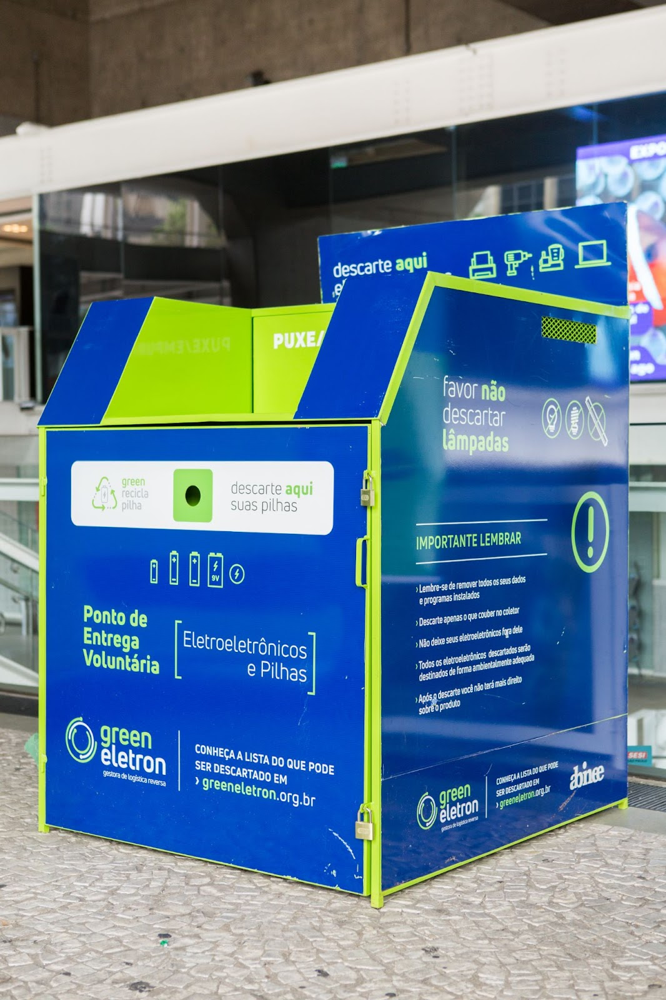

Orientações de Descarte
Em cada Farmácia participante, existe uma estação coletora que foi desenvolvida com alta tecnologia e segurança, visando a atender às exigências sanitárias e facilitar o descarte adequado de seus medicamentos.

Estações coletoras ECOMED
-
Separe na sua casa
Verifique na sua casa a data de vencimento dos seus medicamentos. Separe os vencidos e aqueles que você sabe que não serão mais usados. -
Leve a um ponto de coleta
Leve-os com suas respectivas caixas a uma das farmácias participantes e localize uma das nossas estações coletoras ECOMED. Confira em Pontos de Coleta. -
Descarte corretamente
Na estação coletora, siga a orientação de registro, separação e inutilização das embalagens, depositando-as nos locais indicados.